|
Stigbergsgatan öster om Renstjernas gata.
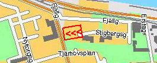 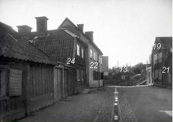 Stigbergsgatan västerut. Stigbergsgatan 24-22 till vänster. Nr 19 till höger, Blockmakarens hus nr 21 i kanten. Rakt fram syns Nr 13 på andra sidan om den framsprängda Renstjernas gata.
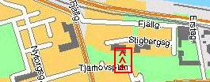 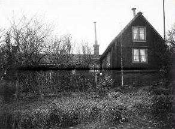 Stigbergsgatan 26. Bilden tagen tidigast 1908. Huset revs kort tid därefter. Bilden tagen från söder.
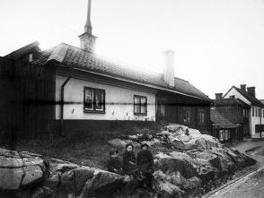 Stigbergsg 26 från nordost
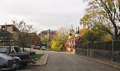
|
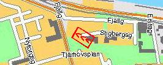 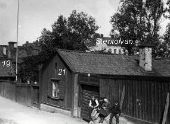 Stigbergsgatan 21, Blockmakarens hus (Kv Grenen)
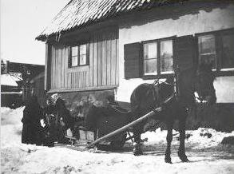 Stigbergsgatan 15 (Kv Grenen) Mjölkförsäljning utanför huset 1896. Här har numera Renstiernas Gata sprängts fram.
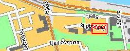 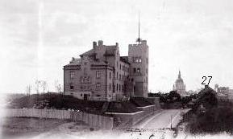 Stigbergsgatan 30, Navigationsskolan (Kv Justitia). Bilden tagen tidigast 1903.
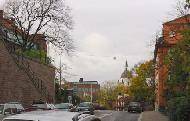
|
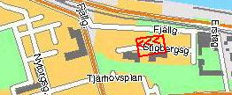 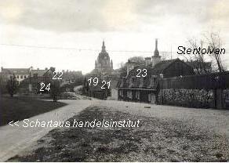 Stigbergsgatan 17-25 . Gatan högra sida nr 17-25. Enligt tidens nya stadsplan tillhörde 17-21 Kv Grenen och 23-25 Kv Stammen. I nr 21 bodde blockmakaren. Bilden tagen 1923.
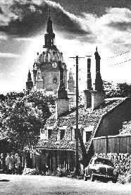 Liljeroth m fl, Allhems Förlag, 1967)
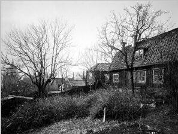 Stigbergsg 32 från sydost
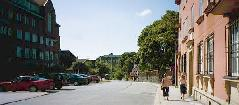
|